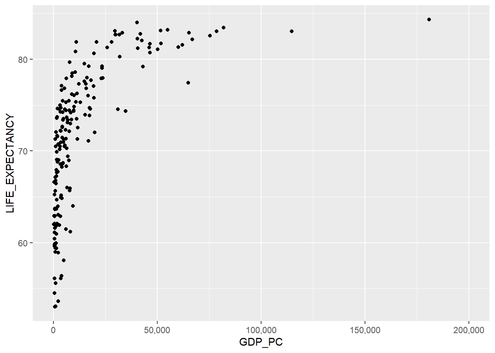

library(tidyverse)
library(plotly)
library(DT)
library(scales)
library(palmerpenguins)09_clase_ggplot2-plotly
carga de bibliotecas
Ejercicio 1: Tablas con Tidyverse
1.1 Carga de los datos de países
# Carga de los datos de países
paises <-
read_csv("https://raw.githubusercontent.com/pf0953-programacionr/2024-ii/refs/heads/main/datos/natural-earth/paises-join-esperanzavida.csv"
)1.2 Tabla con datos de los países
# Tabla de datos de paises
paises |>
filter(SUBREGION == "Eastern Europe" & POP_EST >= 10000000) |>
select(ADM0_ISO, NAME, POP_EST) |>
arrange(desc(POP_EST)) |>
datatable(
options = list(
pageLength = 5,
language = list(url = '//cdn.datatables.net/plug-ins/1.10.11/i18n/Spanish.json')
)
)Ejercicio 2: gráficos con ggplot2
2.1 Gráfico de dispersión
# Gráfico de dispersión de PIB per cápita vs esperanza de vida al nacer
paises |>
ggplot(aes(x = GDP_PC, y = LIFE_EXPECTANCY)) +
geom_point() +
scale_x_continuous(labels = comma, limits = c(0, NA))
2.2 Gráfico de dispersión con color
# Gráfico de dispersión de PIB per cápita vs esperanza de vida al nacer
paises |>
ggplot(aes(x = GDP_PC, y = LIFE_EXPECTANCY, color = REGION_UN)) +
geom_point() +
scale_x_continuous(labels = comma, limits = c(0, NA))
2.2 Gráfico de dispersión con color
# Tabla de datos de paises
paises |>
# select(ADM0_ISO, NAME, POP_EST) |>
arrange(desc(GDP_PC)) |>
select(ADM0_ISO, NAME, GDP_PC, LIFE_EXPECTANCY) |>
datatable(
options = list(
pageLength = 5,
language = list(url = '//cdn.datatables.net/plug-ins/1.10.11/i18n/Spanish.json')
)
)2.3 Gráfico de dispersión con formas
# Gráfico de dispersión de PIB per cápita vs esperanza de vida al nacer
# con formas de puntos correspondientes al continente
paises |>
ggplot(aes(x = GDP_PC, y = LIFE_EXPECTANCY, shape = REGION_UN)) +
geom_point() +
scale_x_continuous(labels = comma, limits = c(0, NA))
2.4 Gráfico de dispersión con formas y color
# Gráfico de dispersión de PIB per cápita vs esperanza de vida al nacer
# con formas y colores correspondientes al continente
paises |>
ggplot(aes(x = GDP_PC, y = LIFE_EXPECTANCY, shape = REGION_UN, color = REGION_UN)) +
geom_point() +
scale_x_continuous(labels = comma, limits = c(0, NA)) +
scale_shape_manual(values = c(0, 1, 2, 3, 4, 5, 6, 7)) +
scale_color_manual(values = c("red", "blue", "green", "purple", "orange", "brown", "pink", "yellow"))
2.5 Gráfico de dispersión con formas, color y tamaño
# Gráfico de dispersión de PIB per cápita vs esperanza de vida al nacer
# con tamaño de puntos correspondiente a la población
paises |>
ggplot(aes(x = GDP_PC, y = LIFE_EXPECTANCY, size = POP_EST, color = CONTINENT)) +
geom_point() +
scale_size_continuous(labels = comma) +
scale_x_continuous(labels = comma, limits = c(0, NA))
2.6 Gráfico de dispersión con formas, color y curva de tendencia
# Gráfico de dispersión de PIB per cápita vs esperanza de vida al nacer
# + curva de tendencia
paises |>
ggplot(aes(x = GDP_PC, y = LIFE_EXPECTANCY)) +
geom_point() +
geom_smooth(method = 'lm') +
scale_x_continuous(labels = comma, limits = c(0, NA))
2.7 Gráfico de dispersión con formas, color y curva de tendencia - África y Europa
# Gráfico de dispersión de PIB per cápita vs esperanza de vida al nacer
# en África y Europa coloreado por continente
# + curva de tendencia
paises |>
filter(CONTINENT == 'Africa' | CONTINENT == 'Europe') |>
ggplot(aes(x = GDP_PC, y = LIFE_EXPECTANCY, color = CONTINENT)) +
geom_point() +
geom_smooth() +
scale_x_continuous(labels = comma, limits = c(0, NA)) +
scale_y_continuous(labels = comma, limits = c(50, 90))
Ejercicio 3: palmerpenguins
Palmer penguins
penguins |>
ggplot(aes(x = body_mass_g, y = bill_length_mm, color = species)) +
geom_point()Ejercicio 4: Gráfico por continente
# Gráfico de dispersión de PIB per cápita vs esperanza de vida al nacer
# + paneles por continente
paises |>
ggplot(aes(x = GDP_PC, y = LIFE_EXPECTANCY)) +
geom_point() +
facet_wrap(~ CONTINENT, nrow = 2) +
scale_x_continuous(labels = comma, limits = c(0, NA))